압연기능사 (2015-04-04 기출문제)
1과목: 금속재료일반
1. 상자성체 금속에 해당되는 것은?
- Al
- Fe
- Ni
- Co
(정답률: 70%)

2. 건축용 철골, 볼트, 리벳 등에 사용되는 것으로 연신율이 약 22%이고, 탄소함량이 약 0.15%인 강재는?
- 연강
- 경강
- 최경강
- 탄소공구강
(정답률: 67%)
3. 다음의 금속 중 경금속에 해당하는 것은?
- Cu
- Be
- Ni
- Sn
(정답률: 71%)
4. 황동은 도가니로, 전기로 또는 반사로 등에서 용해하는데, Zn의 증발로 손실이 있기 때문에 이를 억제하기 위해서는 용탕 포면에 어떤 것을 덮어 주는가?
- 소금
- 석회석
- 숯가루
- Al 분말가루
(정답률: 67%)
5. 저용융점(fusible) 합금에 대한 설명으로 틀린 것은?
- Bi를 55% 이상 함유한 합금은 응고 수축을 한다.
- 용도로는 화재통보기, 압축공기용 탱크 안전밸브 등에 사용된다.
- 33~66%Pb를 함유한 Bi 합금은 응고 후 시효 진행에 따라 팽창현상을 나타낸다.
- 저용융점 합금은 약 250℃ 이하의 용융점을 갖는 것이며 Pb, Bi, Sn, Cd, In 등의 합금이다.
(정답률: 55%)
6. 주철의 일반적인 성질을 설명한 것 중 틀린 것은?
- 용탕이 된 주철은 유동성이 좋다.
- 공정 주철의 탄소량은 4.3% 정도이다.
- 강보다 용융 온도가 높아 복잡한 형상이라도 주조하기 어럽다.
- 주철에 함유하는 전탄소(total carbon)는 흑연+화합탄소로 나타낸다.
(정답률: 74%)
7. 금속재료의 경량화와 강인화를 위하여 섬유 강화금속 복합재료가 많이 연구되고 있다. 강화섬유 중에서 비금속계로 짝지어진 것은?
- K, W
- W, Ti
- W, Be
- SiC, Al2O3
(정답률: 77%)
8. 동(Cu)합금 중에서 가장 큰 가도와 경도를 나타내며 내식성, 도전성, 내피로성 등이 우수하여 베어링, 스프링 및 전극재료 등으로 사용되는 재료는?
- 인(P) 청동
- 규소(Si) 동
- 니켈(Ni) 청동
- 베릴륨(Be) 동
(정답률: 73%)
9. 시험편의 지름이 15mm, 최대하중이 5200kgf 일 때 인장강도는?
- 16.8 kgf/mm2
- 29.4 kgf/mm2
- 33.8 kgf/mm2
- 55.8 kgf/mm2
(정답률: 50%)
10. 포금(gun metal)에 대한 설명으로 틀린 것은?
- 내해수성이 우수하다.
- 성분은 8~12%Sn 청동에 1~2%Zn을 첨가한 합금이다.
- 용해주조시 탈산제로 사용되는 P의 첨가량을 많이 하여 합금 중에 P를 0.⑤~0.5% 정도 남게 한 것이다.
- 수압, 수증기에 잘 견디므로 선박용 재료에 널리 사용된다.
(정답률: 66%)
11. 순철의 자기변태(A2)점 온도는 약 몇 ℃ 인가?
- 210℃
- 768℃
- 910℃
- 1400℃
(정답률: 79%)
12. 고 Mn강으로 내마멸성과 내충격성이 우수하고, 특히 인성이 우수하기 때문에 파쇄 장치, 기차 레일, 굴착기 등의 재료로 사용되는 것은?
- 엘린바(elinvar)
- 디디뮴(didymium)
- 스텔라이트(stellite)
- 해드필드(hadfield)강
(정답률: 81%)
13. 상하 또는 좌우가 대칭인 물체를 그림과 같이 중심선을 기준으로 내부 모양과 외부 모양을 동시에 표시하는 단면도는?
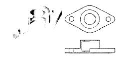
- 온 단면도
- 한쪽 단면도
- 국부 단면도
- 부분 단면도
(정답률: 53%)
14. 물체의 보이는 모양을 나타내는 선으로서 굵은 실선으로 긋는 선은?
- 외형선
- 가상선
- 중심선
- 1점쇄선
(정답률: 87%)
15. 제도의 기본 요건으로 적합하지 않은 것은?
- 이해하기 쉬운 방법으로 표현한다.
- 정확성, 보편성을 가져야 한다.
- 표현의 국제성을 가져야 한다.
- 대상물의 도형과 함께 크기, 모양만을 표현한다.
(정답률: 87%)
2과목: 금속제도
16. 나사의 일반 도시 방법에 관한 설명 중 옳은 것은?
- 수나사의 바깥지름과 암나사의 안지름은 가는 실선으로 도시한다.
- 완전 나사부와 불완전 나사부의 경계는 가는 실선으로 도시한다.
- 수나사와 암나사의 측면 도시에서의 골지름은 굵은 실선으로 도시한다.
- 불완전 나사부의 끝 밑선은 축선에 대하여 30° 경사진 가는 실선으로 그린다.
(정답률: 49%)
17. 다음 그림 중 호의 길이를 표시하는 치수기입법으로 옳은 것은?
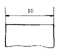
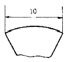
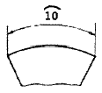
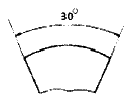
(정답률: 83%)
18. 도면에 기입된 “5-ø20드릴”을 옳게 설명한 것은?
- 드릴 구멍이 15개이다.
- 직경 5mm인 드릴 구멍이 20개이다.
- 직경 20mm인 드릴 구멍이 5개이다.
- 직경 20mm인 드릴 구멍의 간격이 5mm이다.
(정답률: 87%)
19. 물체의 단면을 표시하기 위하여 단면 부분에 흐리게 칠하는 것을 무엇이라 하는가?
- 리브(rib)
- 널링(knurling)
- 스머징(smudging)
- 해칭(hatching)
(정답률: 70%)
20. 치수허용차와 기준선의 관계에서 위 치수허용차가 옳은 것은?
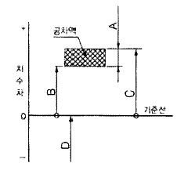
- A
- B
- C
- D
(정답률: 70%)
21. 투상도를 그리는 방법에 대한 설명으로 틀린 것은?
- 조립도 등 주로 기능을 표시하는 도면에서는 물체가 사용되는 상태를 그린다.
- 일반적인 도면에서는 물체를 가장 잘 나타내는 상태를 정면도로 하여 그린다.
- 주투상도를 보충하는 다른 투상도의 수는 되도록 많이 그리도록 한다.
- 물체의 길이가 길어 도면에 나타내기 어려울 때 즉, 교량의 트러스 같은 경우 중간부분을 생략하고 그릴 수 있다.
(정답률: 84%)
22. 척도에 관한 설명 중 보기에서 옳은 내용을 모두 고른 것은?
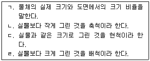
- ㄱ, ㄴ
- ㄱ, ㄷ, ㄹ
- ㄴ, ㄷ, ㄹ
- ㄱ, ㄴ, ㄷ, ㄹ
(정답률: 87%)
23. 다음 중 미터 사다리꼴나사를 나타내는 표시법은?
- M8
- TW10
- Tr10
- 1 - 8 UNC
(정답률: 74%)
24. 투상선을 투상면에 수직으로 투상하여 정면도, 측면도, 평면도로 나타내는 투상법은?
- 정투상법
- 사투상법
- 등각투상법
- 투시투상법
(정답률: 78%)
25. 냉간압연기 중 1Pass당 압하율이 가장 큰 것은?
- 스테켈 압연기
- 클러스터 압연기
- 센지미어 압연기
- 유성 압연기
(정답률: 67%)
26. 금속의 재결정온도에 대한 설명으로 틀린 것은?
- 재결정온도는 금속의 종류와 가공정도에 따라 다르다.
- 재결정온도보다 높은 온도에서 압연하는 것을 열간 압연이라 한다.
- 재결정온도보다 높은 온도에서 압연하면 강도가 강해진다.
- 재결정온도보다 낮은 온도에서 압연하면 결정입자가 미세해진다.
(정답률: 77%)
27. 압연유 급유방식 중 직접 방식에 관한 설명이 아닌 것은?
- 냉각효율이 높으며, 물을 사용할 수 있다.
- 적은 용량을 사용하므로 폐유 처리설비가 작다.
- 윤활 성능이 좋은 압연유를 사용할 수 있다.
- 압연 상태가 좋고 압연유 관리가 쉽다.
(정답률: 72%)
28. 강편 사상압연기의 전면에 설치되어 소재를 45도 회전시켜 주는 설비는?
- 그립 틸터(grip tilter)
- 핀치 롤(pinch roll)
- 트위스트 가이드(twist guide)
- 스크류 다운(screw down)
(정답률: 48%)
29. 산세 공정의 작업 내용이 아닌 것은?
- 스트립 표면의 스케일을 제거한다.
- 압연유를 제거한다.
- 규정된 폭에 맞추어 사이드 트리밍 한다.
- 소형 코일을 용접하여 대형 코일로 만든다.
(정답률: 54%)
30. 산세 작업시 산세 강판의 과산세 방지를 위해 산액에 첨가하는 약품은?
- 염산(HCI)
- 계면 활성제
- 부식 억제제
- 황산(H2SO4)
(정답률: 78%)
3과목: 압연기술
31. 윤활의 주된 역할과 가장 거리가 먼 것은?
- 응력의 집중 작용
- 마모 감소 작용
- 냉각 작용
- 밀봉 작용
(정답률: 73%)
32. 공형 로울에서 재료의 모서리 성형이 잘되므로 형강의 성형압연에서 주로 채용되고 있는 로울은?
- 폐쇄공형 로울
- 원통 로울
- 평 로울
- 개방공형 로울
(정답률: 66%)
33. 열간 압연 코일(coil)은 사용목적에 따라서 필요한 단면 형상으로 만들어야 한다. 냉간압연 소재로서 가장 이상적인 단면 형상은?
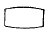
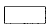
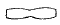
(정답률: 83%)
34. 조질 압연의 연신율을 구하는 공식으로 옳은 것은?
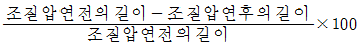
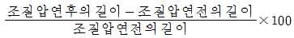
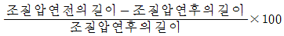
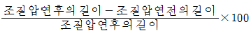
(정답률: 69%)
35. 로울 공형의 설계조건으로 틀린 것은?
- 압연에 의한 재료의 흐름이 균일할 것
- 공형 깊이는 로울 표면 경화층을 초과할 것
- 제품의 치수와 형상이 정확하고 표면이 미려할 것
- 제품의 회수율이 높을 것
(정답률: 67%)
36. 압연반제품의 표면결함이 아닌 것은?
- 시임(seam)
- 긁힌흠(scratch)
- 스캐브(scab)
- 비금속 개재물
(정답률: 82%)
37. 다음 중 소성가공 방법이 아닌 것은?
- 단조
- 압연
- 주조
- 프레스 가공
(정답률: 81%)
38. 가공에 의한 가공경화에 대한 설명으로 옳은 것은?
- 경도값 감소
- 강도값 감소
- 연신율 감소
- 항복점 감소
(정답률: 73%)
39. 변형도중에 변형의 방향이 바뀌면 같은 방향으로 변형하는 경우에 비해 항복점이 낮아지는 현상은?
- 쌍정
- 이방성
- 루더스 벤드
- 바우싱거 효과
(정답률: 69%)
40. 냉간압연시 가공 경화된 재질을 개선하기 위하여 풀림(annealing) 처리를 실시한다. 이 때 발생하는 산화피막을 억제하는 방법은 다음 중 어느 것인가?
- 액체침질
- 화염경화열처리
- 고주파 열처리
- 진공열처리
(정답률: 54%)
41. 강판을 폭이 좁은 형상의 띠 모양으로 절단 가공하여 감아 놓은 강대는?
- 후프(hoop)
- 슬래브(slab)
- 틴 바(tin bar)
- 스켈프(skelp)
(정답률: 71%)
42. 압연 롤 크라운(crown)에 영향을 주는 인자가 아닌 것은?
- 기계적 크라운
- 롤의 냉각제어
- 롤 굽힘(roll bending)조정
- 장력조정
(정답률: 58%)
43. 냉간가공에 의해 가공 경화된 강을 풀림 처리할 때의 과정으로 맞는 것은?
- 회복 → 재결정 → 결정립 성장
- 회복 → 결정립 성장 → 재결정
- 결정립 성장 → 재결정 → 회복
- 재결정 → 회복 → 결정립 성장
(정답률: 74%)
44. 다음 중 냉간압연 공정에 해당되는 것은?
- 풀림
- 연주
- 조괴
- 소결
(정답률: 79%)
45. 두께 200mm의 압연소재를 160mm로 압연을 하였다. 압하율은?
- 20%
- 40%
- 60%
- 80%
(정답률: 67%)
4과목: 압연설비
46. 압연제품 중 가장 두께가 작은 중간 소재는?
- 블루움(bloom)
- 빌릿(billet)
- 슬랩(slab)
- 시이트바(sheet bar)
(정답률: 51%)
47. 액체 연료의 장점이 아닌 것은?
- 계량과 기록이 쉽다.
- 연소가 용이하고 제어가 쉽다.
- 연소 효율 및 전열 효율이 높다.
- 연소온도가 높아 국부가열을 일으킨다.
(정답률: 72%)
48. 조질 압연의 목적이 아닌 것은?
- 기계적 성질 향상
- 항복점 연신 증가
- 스트립 형상 개선
- 스트립 표면 조도 부여
(정답률: 57%)
49. 다음 중 압연기에서 전동기의 동력을 각 롤에 분배하는 장치는?
- 스탠드
- 리피더
- 가이드
- 피니언
(정답률: 81%)
50. 지름이 큰 상하의 지지로울주위에 다수의 소경작업로울을 로울러베어링과 같이 배치하여 이 작업로울의 자전과 공전에 의하여 압연하는 압연기의 종류는?
- 센지미어(sendzimir)압연기
- 유성압연기
- 유니버설압연기
- 로온(rohn)압연기
(정답률: 60%)
51. 선재 공정에서 상하 롤의 직경이 하부 롤의 직경보다 큰 경우 그 이유는 무엇인가?
- 압연 소재가 상향되는 것을 방지하기 위하여
- 압연 소재가 하향되는 것을 방지하기 위하여
- 소재의 두께 정도를 향상시키기 위하여
- 롤의 원단위를 감소시키기 위하여
(정답률: 76%)
52. 압연 설비에서 윤활의 목적이 아닌 것은?
- 방청 작용
- 발열 작용
- 감마 작용
- 세정 작용
(정답률: 79%)
53. 압연기에서 나온 압연재를 전 횡당면에 걸쳐 일정한 냉각 속도로 냉각시키는 역할을 하는 것은?
- 수평횡송기
- 냉각상
- 롤러 테이블
- 기중기
(정답률: 81%)
54. 압연 윤활유가 갖추어야 할 성질 중 옳은 것은?
- 마찰계수가 클 것
- 독성 및 위생적 해가 있을 것
- 유성 및 유막의 강도가 클 것
- 기름의 안정성 및 에멀션화성이 나쁠 것
(정답률: 76%)
55. 압연 롤을 회전시키는 압연모멘트 45kg·m, 롤의 회전수 50rpm으로 회전시킬 때 압연효율을 50%로 하면 필요한 압연마력은?
- 약 3마력
- 약 5마력
- 약 6마력
- 약 8마력
(정답률: 57%)
56. 압연기를 통과한 제품을 냉각 상에서 이송하기 위한 설비 형식이 아닌 것은?
- 슬립(Slip) 방식
- 체인(Chain) 방식
- 워킹(Walking) 방식
- 스킨(Skin) 방식
(정답률: 67%)
57. 센지미어 압연기의 롤 배치 형태로 옳은 것은?
- 2단식
- 3단식
- 4단식
- 다단식
(정답률: 67%)
58. 천정설비에서 화학적 세정방법이 아닌 것은?
- 알칼리 세정
- 계면활성화 세정
- 용제 세정
- 초음파 세정
(정답률: 81%)
59. 압연소재 이송용 와이어 로프(wire rope) 검사시 유의사항이 될 수 없는 것은?
- 비중 상태
- 부식 상태
- 단선 상태
- 마모 상태
(정답률: 80%)
60. 다음 중 대량생산에 적합하여 열연 사상압연에 많이 사용되는 압연기는?
- 데라 압연기
- 클러스터 압연기
- 라우드식 압연기
- 4단 연속 압연기
(정답률: 78%)